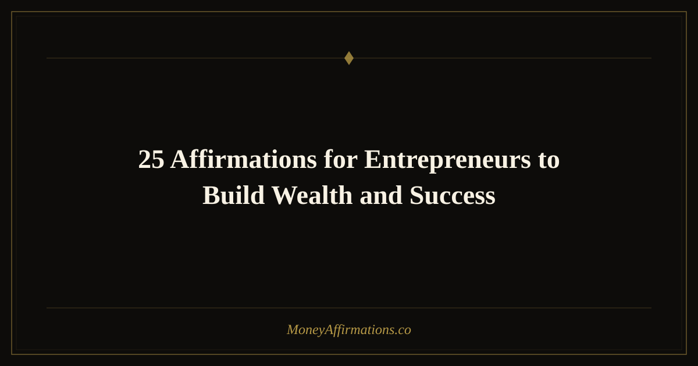

25 Affirmations for Entrepreneurs to Build Wealth and Success

Entrepreneurship is as much an inner game as an outer one. You can have the best product, the sharpest strategy, and the most disciplined work ethic — and still self-sabotage through imposter syndrome, fear of charging what you are worth, or a deep-seated belief that success is reserved for other people. The mindset you operate from is the invisible infrastructure of your business, and it determines more of your outcomes than most entrepreneurs are willing to admit.
Affirmations for entrepreneurs target the specific beliefs that tend to hold business owners back: uncertainty about leadership, reluctance to charge full price, anxiety about rejection, and fear of scaling too fast or too slow. These 25 statements are written for the daily realities of building a business — clients, revenue, risk, vision, and the relentless challenge of leading yourself before you can lead others.
What are affirmations for entrepreneurs?
Entrepreneur affirmations are present-tense, first-person statements that reinforce the identity, confidence, and financial mindset required for business success. Unlike generic money affirmations, these speak directly to the unique psychological demands of building something from scratch: the need to bet on yourself, to ask for money, to lead a team, to take risks with incomplete information, and to keep going when results are slow.
Studies on entrepreneurial psychology consistently identify self-efficacy — the belief in your own capacity to succeed — as one of the strongest predictors of business outcomes. Affirmations are a direct tool for building that belief. When you repeat "I am a confident, capable leader" daily, you gradually dismantle the imposter syndrome narrative and replace it with genuine expectation of success. That expectation is then expressed in how you show up for clients, how you price your work, and how boldly you pursue growth.
25 affirmations for entrepreneurs
- I am a confident, visionary entrepreneur who builds wealth and creates real impact.
- My business attracts ideal clients who value my work and pay with gratitude.
- I charge what I am worth and my clients happily invest in my services.
- My revenue grows consistently because I show up fully and serve at the highest level.
- I am a natural leader and my team thrives under my guidance and vision.
- I take bold, informed risks and they consistently move my business forward.
- My vision is clear, my strategy is strong, and my execution is excellent.
- I attract the right clients, partners, and opportunities at exactly the right time.
- I am scaling my business with ease, confidence, and complete financial clarity.
- Every challenge I face makes me a smarter, stronger, more resilient entrepreneur.
- My offers are deeply valuable and my clients achieve remarkable results through them.
- I am worthy of massive financial success and I claim it unapologetically.
- My business generates consistent, growing income that supports the life I love.
- I lead my business from a place of abundance, not scarcity or fear.
- Clients find me easily and feel immediately aligned with what I offer.
- I invest in my business with confidence and each investment multiplies my returns.
- I am a powerful closer who communicates my value clearly and converts with ease.
- My entrepreneurial instincts are sharp and I trust my decisions fully.
- I build systems that allow my business to grow beyond my direct effort.
- I am the kind of leader people trust, follow, and are inspired to work with.
- My business is profitable, purposeful, and expanding in exciting ways every day.
- I welcome abundance into every area of my business and celebrate every milestone.
- I have the courage to pursue my biggest vision and the skill to make it real.
- My business creates wealth for me, for my team, and for everyone it touches.
- I am a successful entrepreneur and my business is a vehicle for lasting financial freedom.
How to use these affirmations
Integrate your entrepreneur affirmations into the natural rhythm of your workday rather than treating them as a separate wellness activity. Begin each morning — before emails, before Slack, before your task list — with five minutes of affirmations. This primes your mindset for the entire work session that follows and ensures you are operating from confidence rather than reactivity from the very first decision of the day.
Before high-stakes moments, use affirmations as a two-minute reset. Before a sales call, choose three statements about confidence and value and repeat them out loud while standing. Before a pitch or a difficult leadership conversation, reach for the affirmations that address exactly the fear arising in that moment. This is not superstition — it is deliberate nervous system regulation through language.
At the end of each work week, read through the full list and note which affirmations produce the strongest reaction — either resonance or resistance. The ones that produce resistance are the most important to work with. They point directly to the limiting beliefs that are currently creating a ceiling in your business. Give those statements extra attention until the resistance dissolves.
Tips to make them work faster
- Record yourself saying them. Play the recording back during your commute, workout, or any low-focus activity. Hearing your own voice affirm your success is one of the most powerful reprogramming tools available to entrepreneurs.
- Anchor them to your biggest goal. Keep your revenue target or client goal clearly in mind when practicing. Affirmations gain focus and power when they are oriented toward a specific outcome you are actively working toward.
- Use them after a rejection or setback. The moment a deal falls through or a launch underperforms is exactly when old limiting beliefs rush in. Counter them immediately with three to five affirmations before you analyze what happened.
- Share them with an accountability partner. Saying your affirmations to another entrepreneur — and hearing theirs in return — creates social reinforcement and accountability that amplifies the individual practice significantly.
- Review them when pricing your offers. Many entrepreneurs habitually underprice from fear. Reading your value and worth affirmations immediately before setting or raising prices interrupts that pattern and supports bolder, more accurate pricing decisions.
Frequently Asked Questions
When should I say affirmations during a busy entrepreneurial day?
The highest-impact moments are first thing in the morning before you engage with work, immediately before any high-stakes activity like a sales call or difficult conversation, and during any moment of stress or self-doubt. Even sixty seconds of targeted affirmations in a bathroom mirror before walking into a meeting can measurably shift your confidence and presence. Consistency across multiple small touchpoints throughout the day outperforms a single long session.
Can affirmations help me charge higher prices in my business?
Yes — and this is one of their most practical business applications. Undercharging is almost always a mindset issue rooted in beliefs about worthiness, fear of rejection, or the internalized idea that money and value are in conflict. Affirmations focused on worth, value, and the joy of receiving appropriate compensation directly address these blocks. Many entrepreneurs report being able to raise their rates after a consistent affirmation practice focused on confident, values-aligned pricing.
I already work hard — why do I also need affirmations?
Hard work gets results, but it operates inside the constraints of your current mindset. If your mindset includes beliefs like "I am not ready to scale," "clients will think I am too expensive," or "I always have to struggle for money," hard work will consistently hit those invisible ceilings. Affirmations expand the ceiling itself. They are not a replacement for effort — they are the upgrade that makes your effort more effective, more targeted, and more likely to produce the results you are actually capable of creating.
For a broader set of wealth-building statements to support every stage of your entrepreneurial journey, explore the full money affirmations collection.